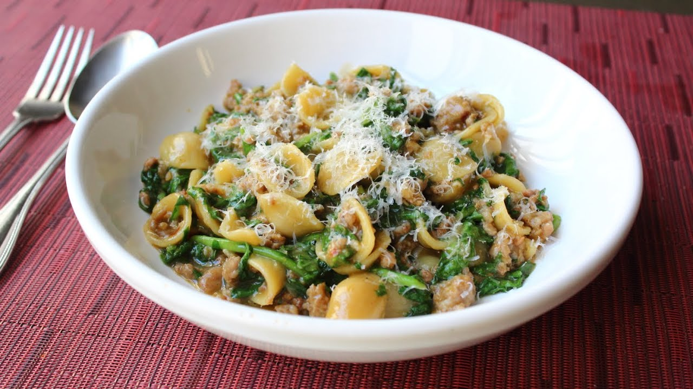

One Pan Orecchiette Pasta

Description
This delicious orecchiette pasta recipe only has a handful of ingredients, is very cheap to make,
and most importantly, only uses one pan or pot for the entire procedure. Every year when it's time
to go back to school I get inundated with requests from students to post recipes that are super-easy,
cost pennies, and require a bare minimum of kitchen equipment — this is one of them!
Ingredients
- 2 tbsp olive oil
- 1/2 onion, diced
- salt to taste
- 8 oz spicy Italian sausages, casings removed
- 3 1/2 cups chicken broth
- 1 1/4 cups orecchiette pasta
- 1/2 cup chopped kale
- 1/4 cup finely grated Parmigiano-Reggiano cheese (or to taste)
Steps
- Heat olive oil in a large, deep skillet over medium heat. Add onion with a pinch of salt;
cook and stir until onion has softened and turned transluscentm about 5 mins. Stir in sausage
and cook until browned, 5-7 mins.
- Pour 1 1/2 cups chicken broth into sausage mixture and bring to a boil while scraping the browned
bits of food off of the bottom of the pan with a wooden spoon. Add orecchiette pasta; cook and stir
pasta in hot broth, adding remaining broth when liquid is absorbed, until pasta is cooked through
and most of the broth is absorbed, about 15 minutes.
- Stir kale into sausage-pasta mix until it wilts. Ladle pasta into bowls and sprinkle with
Parmigiano-Reggiano cheese.